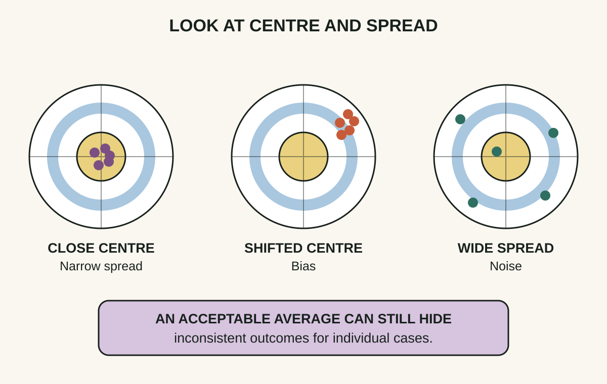
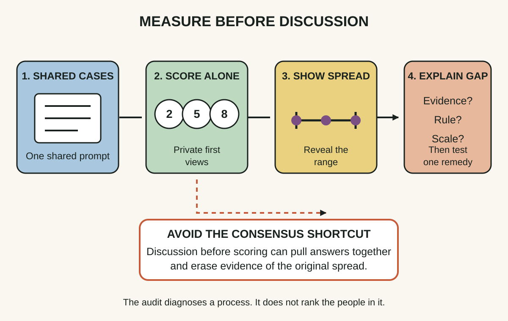
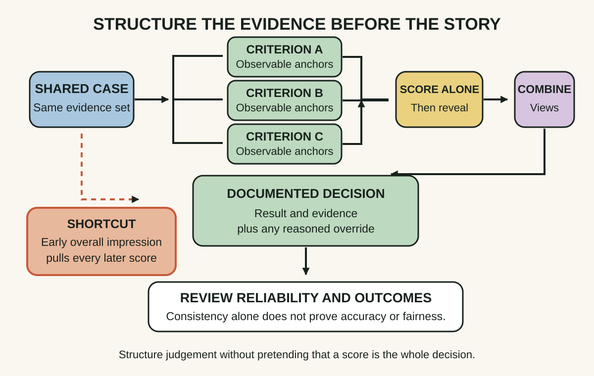

Daily lesson ·
Noise
Improve repeated professional judgements by separating unwanted variability from bias, measuring disagreement on shared cases, and designing a process that makes independent evidence visible before intuition takes over.
Idea 1
Separate noise from bias #
The idea
The authors distinguish two kinds of error. Bias moves judgements systematically away from a target, while noise spreads judgements around even when their average is close to the target. A team can therefore look unbiased on average while still giving sharply different answers to equivalent cases.
They focus on system noise: unwanted variation among people, or within the same person at different times, when the organisation expects comparable judgements. Because opposite errors can cancel in an average, reviewing only the mean can hide a costly and unfair process.

Why it matters
If a review looks only for one shared mistake, it may miss inconsistent treatment across users, incidents, estimates or candidates. Naming noise makes reliability a visible design concern rather than dismissing disagreement as ordinary professional style.
Apply it today
Choose five recent decisions of the same kind, such as severity ratings, effort estimates or approval outcomes. Write the decision rule you expected each case to follow.
Compare both the average result and the range. Mark one difference that reflects a legitimate case distinction and one that appears to come from who judged it or when it was judged.
Caveat or failure mode
Variation is not automatically error. Different cases can deserve different treatment, and plural values may justify more than one answer. Define which decisions should be comparable before treating their spread as noise, and do not confuse consistency with truth or fairness.
Idea 2
Run a noise audit #
The idea
The authors recommend making hidden disagreement observable with a noise audit. Several qualified judges independently assess the same realistic cases under comparable conditions. Their answers are then compared as a distribution rather than debated one anecdote at a time.
Independence matters because early discussion creates social influence and can make agreement look stronger than it was. The audit is diagnostic: it reveals the scale and shape of disagreement before the organisation chooses a remedy.

Why it matters
People are usually more comfortable looking for bias than estimating their own inconsistency. A shared-case audit replaces intuition about consistency with inspectable evidence and gives the team a concrete place to improve definitions, scales or evidence.
Apply it today
Write one short case that your team encounters repeatedly and one decision it requires. Remove identifying details and include only evidence a judge would normally have.
Ask two colleagues to record a decision and confidence independently. Reveal all answers together, then capture the first rule or evidence difference that explains the largest gap.
Caveat or failure mode
A tiny audit can reveal a mechanism but cannot estimate organisation-wide noise precisely. Cases must be representative, judges must understand the task, and confidentiality or employment rules may constrain what can be shared. Use the result to form a testable improvement, not to rank or shame individuals.
Idea 3
Use decision hygiene #
The idea
The authors use decision hygiene for process design that reduces error without requiring people to predict their own biases. Useful moves include breaking a complex judgement into components, using shared reference scales, collecting independent views and delaying the final holistic impression until the evidence has been assessed.
The aim is not to remove judgement. It is to control the sequence so that an early story, a vivid detail or the first speaker does not dominate everything that follows. Aggregation can then use multiple informed views while preserving an explicit place for exceptions.

Why it matters
A repeatable sequence makes decisions easier to explain, compare and improve. It also protects dissenting evidence long enough to be considered, while leaving a visible route for cases that genuinely do not fit the normal rule.
Apply it today
Choose one decision you will make this week. Write three criteria that can be judged separately and give each criterion a low and high observable anchor.
Score the criteria before writing an overall conclusion. If you override the combined result, record the new evidence or value that justifies the exception.
Caveat or failure mode
Structure can create false precision, encode historical bias or crowd out expertise when criteria are poor. Test whether the process improves both reliability and outcomes, inspect impacts across affected groups, and retain a reviewable exception path rather than treating a score as the decision itself.
Knowledge check · 6 questions
Learning check
Answer all 6, then check your answers. Your first result stays in this browser, and each explanation appears after you check. A 3-question review can appear on the homepage from tomorrow.
6 questions not yet answered.
Today's experiment · 10 minutes
Expose one hidden spread
- Minutes 0 to 2: choose one repeated judgement, such as incident severity, estimate confidence or proposal priority, and write what should make two cases comparable.
- Minutes 2 to 4: draft one realistic case and a response scale with observable low and high anchors.
- Minutes 4 to 6: ask two available colleagues to record an independent answer and one reason. If nobody is available, score it yourself now and again after reviewing an unrelated task.
- Minutes 6 to 8: reveal the answers and calculate the range. Circle the largest difference in evidence, rule or interpretation.
- Minutes 8 to 10: write one process change to test next time, such as a clearer anchor, a missing evidence field or silent scoring before discussion.
Observable result: One shared case, at least two independently recorded judgements, an observed range, and one specific process change tied to the largest disagreement.
Retrieval practice
Spaced recall
- From The Scout Mindset: what evidence would distinguish a shared directional bias from noisy disagreement around a reasonable centre?
- From Thanks for the Feedback: which trigger might make a reviewer defend an initial score instead of examining the evidence behind a disagreement?
- From Superforecasting: how could independent probability estimates help reveal both the group centre and its spread before discussion?
Verification
Source notes
These links support the attributed claims and edition details; applications and extensions are labelled in the lesson.
- Little, Brown Spark: Noise book description, authors and edition details
- Daniel Kahneman at Princeton: publication record for Noise and related work on reducing noise
- Harvard Kennedy School: Cass Sunstein on unwanted variability across professional judgements
- Kahneman, Sibony and Sunstein: response clarifying system noise, occasion noise and the costs of reduction
- McDaniel and colleagues: meta-analysis of structure and employment-interview validity
- Schmidt and Zimmerman: mixed evidence on interview reliability, structure and independent aggregation
One-sentence takeaway